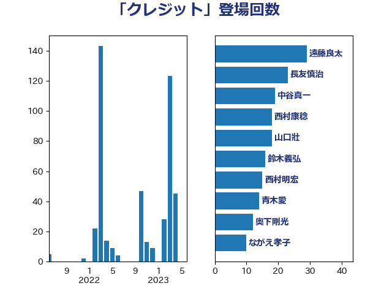

単語「クレジット」

| 遠藤良太 | 日本維新の会 | 29 回 |
| 長友慎治 | 国民民主党 | 23 回 |
| 中谷真一 | 自由民主党 | 19 回 |
| 西村康稔 | 自由民主党 | 18 回 |
| 山口壯 | 自由民主党 | 18 回 |
| 鈴木義弘 | 国民民主党 | 16 回 |
| 西村明宏 | 自由民主党 | 15 回 |
| 青木愛 | 立憲民主党 | 14 回 |
| 奥下剛光 | 日本維新の会 | 12 回 |
| ながえ孝子 | 無所属 | 10 回 |
| 小西洋之 | 立憲民主党 | 6 回 |
| 石井拓 | 自由民主党 | 5 回 |
| 安江伸夫 | 公明党 | 5 回 |
| 岸田文雄 | 自由民主党 | 4 回 |
| 山田美樹 | 自由民主党 | 4 回 |
| 古賀之士 | 立憲民主党 | 4 回 |
| 務台俊介 | 自由民主党 | 4 回 |
| 中川康洋 | 公明党 | 4 回 |
| 下条みつ | 立憲民主党 | 4 回 |
| 野中厚 | 自由民主党 | 3 回 |
| 越智俊之 | 自由民主党 | 3 回 |
| 牧山ひろえ | 立憲民主党 | 3 回 |
| 池畑浩太朗 | 日本維新の会 | 3 回 |
| 斉藤鉄夫 | 公明党 | 3 回 |
| 宮崎雅夫 | 自由民主党 | 3 回 |
| 一谷勇一郎 | 日本維新の会 | 3 回 |
| 輿水恵一 | 公明党 | 2 回 |
| 沢田良 | 日本維新の会 | 2 回 |
| 宮崎勝 | 公明党 | 2 回 |
| 堤かなめ | 立憲民主党 | 2 回 |
| 伊藤孝恵 | 国民民主党 | 2 回 |
| 高橋千鶴子 | 日本共産党 | 1 回 |
| 高橋光男 | 公明党 | 1 回 |
| 高木かおり | 日本維新の会 | 1 回 |
| 阿部知子 | 立憲民主党 | 1 回 |
| 阿部司 | 日本維新の会 | 1 回 |
| 長妻昭 | 立憲民主党 | 1 回 |
| 里見隆治 | 公明党 | 1 回 |
| 細田健一 | 自由民主党 | 1 回 |
| 神津たけし | 立憲民主党 | 1 回 |
| 田嶋要 | 立憲民主党 | 1 回 |
| 猪瀬直樹 | 日本維新の会 | 1 回 |
| 猪口邦子 | 自由民主党 | 1 回 |
| 片山大介 | 日本維新の会 | 1 回 |
| 熊谷裕人 | 立憲民主党 | 1 回 |
| 浜野喜史 | 国民民主党 | 1 回 |
| 泉田裕彦 | 自由民主党 | 1 回 |
| 河西宏一 | 公明党 | 1 回 |
| 江田憲司 | 立憲民主党 | 1 回 |
| 横山信一 | 公明党 | 1 回 |
| 森屋隆 | 立憲民主党 | 1 回 |
| 柳ヶ瀬裕文 | 日本維新の会 | 1 回 |
| 林芳正 | 自由民主党 | 1 回 |
| 朝日健太郎 | 自由民主党 | 1 回 |
| 新妻秀規 | 公明党 | 1 回 |
| 川崎ひでと | 自由民主党 | 1 回 |
| 岡本三成 | 公明党 | 1 回 |
| 山田太郎 | 自由民主党 | 1 回 |
| 山本剛正 | 日本維新の会 | 1 回 |
| 小野泰輔 | 日本維新の会 | 1 回 |
| 小泉進次郎 | 自由民主党 | 1 回 |
| 宮本岳志 | 日本共産党 | 1 回 |
| 宮崎政久 | 自由民主党 | 1 回 |
| 奥野総一郎 | 立憲民主党 | 1 回 |
| 堀場幸子 | 日本維新の会 | 1 回 |
| 保岡宏武 | 自由民主党 | 1 回 |
| 中西健治 | 自由民主党 | 1 回 |
| 中島克仁 | 立憲民主党 | 1 回 |